OCI Process Automation(OPA) の機能を利用して、簡単なワークフローの作成方法をステップ・バイ・ステップで紹介するチュートリアルです。
ここでは、従業員が休暇取得の申請を提出し、その上司が申請内容を承認 or 却下するシンプルな休暇申請ワークフローを作成します。
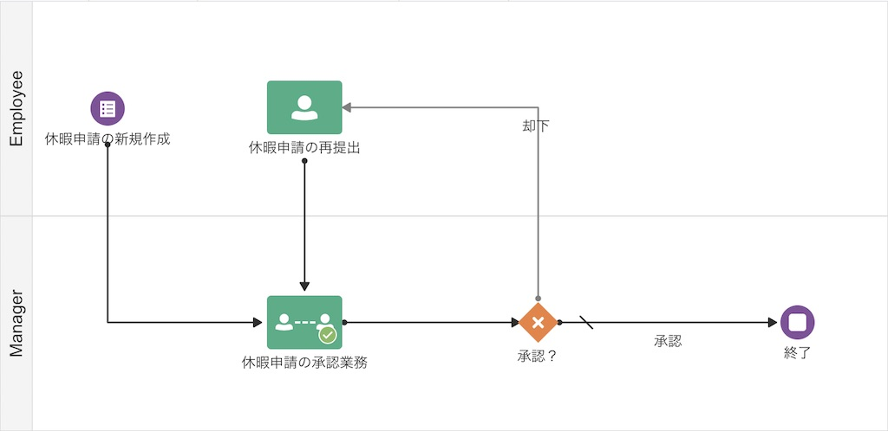
前提条件
-
OPA インスタンスの作成 が完了していること または Oracle Integration 3 Enterprise Edition インスタンスを作成し、OPA を有効化していること(OPAはOIC3 Enterprise Editionにも含まれています)
-
アクセスの管理とロールの割当が完了していること
OPA で簡単なワークフローを作成する
OPA インスタンスにアクセスする
Web ブラウザを開き、提供された OPA インスタンスのURLを入力します。もしくはOCIのコンソールから「開発者サービス」－「アプケーション統合」－「Process Automation」から作成済みのOPAインスタンスを選択し、「Open console」からOPAコンソールを開きます。
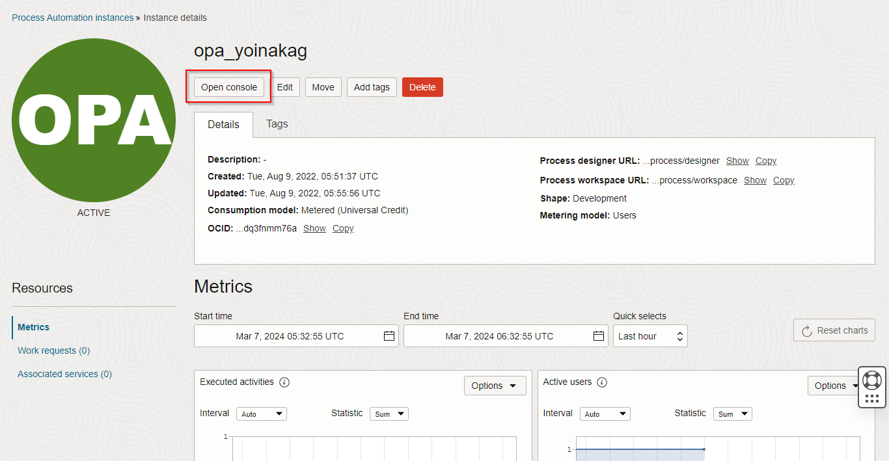
TIPS
画面を開く際、OCIにログインしていない場合はログインしてください。
OPA のホーム画面が開きます。 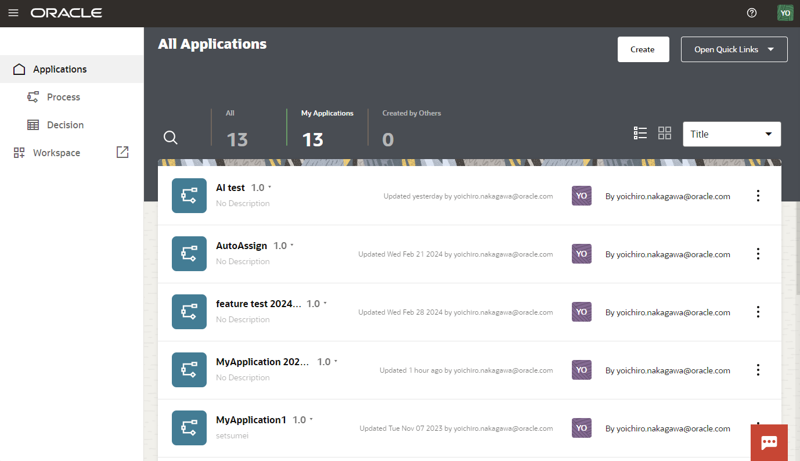
プロセス・アプリケーションを作成する
最初に大枠であるプロセス・アプリケーションを作成します。
「Create」をクリックします。
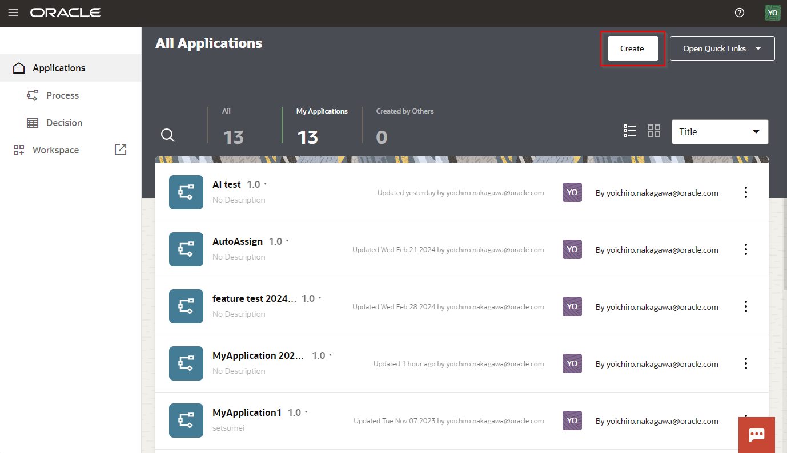
「Create process application」をクリックします。 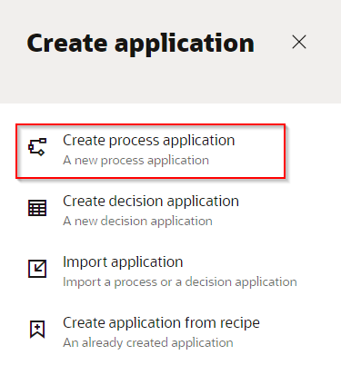
Title、Descriptionを入力します、ここでは以下を入力します。「Create」をクリックします。
| 入力項目 | 入力する値 |
|---|---|
| Title | LeaveRequestApplication |
| Description | 休暇取得申請業務のアプリケーション |
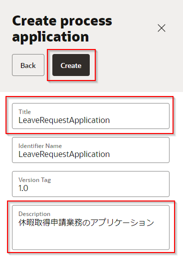
LeaveRequestApplication が作成され、アプリケーション・ホームタブが表示されます。
作成したアプリケーションをクリックして開きます。
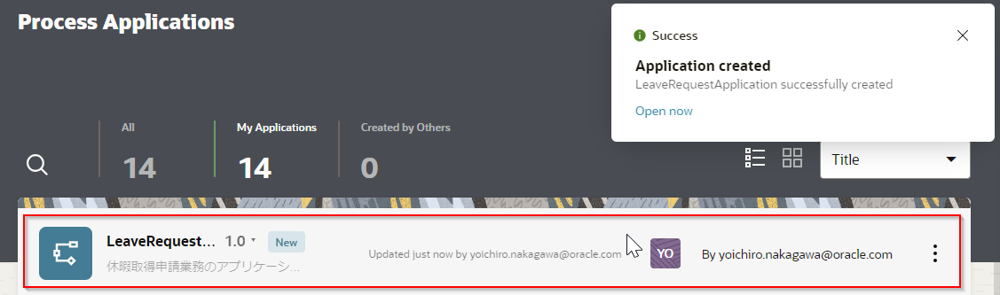
アプリケーションの詳細画面が表示されます。
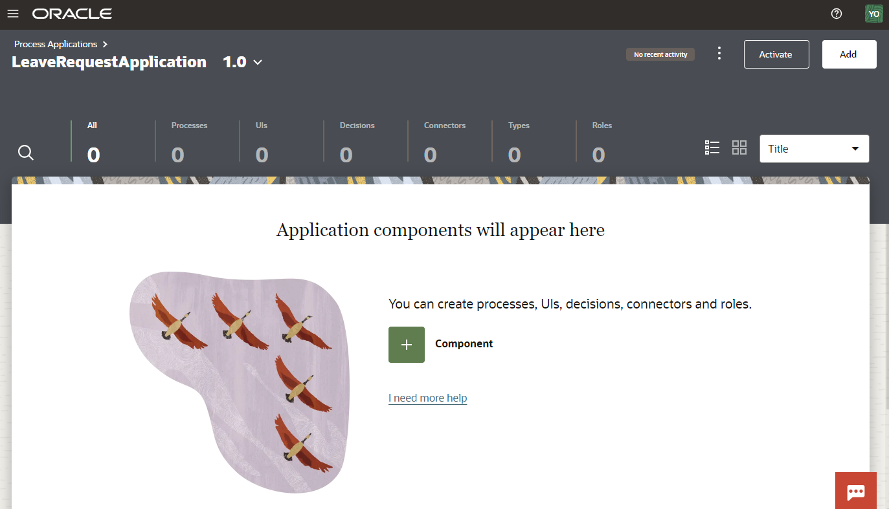
各項目について
| 項目 | 説明 |
|---|---|
| Processes | ワークフローを作成します。 |
| UIs | ワークフローで利用するWebフォームを作成します。 |
| Decisions | デシジョン・ロジックを自動化するデシジョン・モデルを作成します。 |
| Connectors | 外部システムに接続するためのREST APIを定義します。 |
| Types | ビジネス・タイプと値リストを作成して、関連するデータ型をグループ化し、使用するデータの構造を定義します。 |
| Roles | アプリケーションのユーザーロールを作成、設定します。 |
アプリケーション・プロパティを編集する
LeaveRequestApplication のアプリケーション・プロパティを設定します。「︙」から「View Localization」をクリックします。
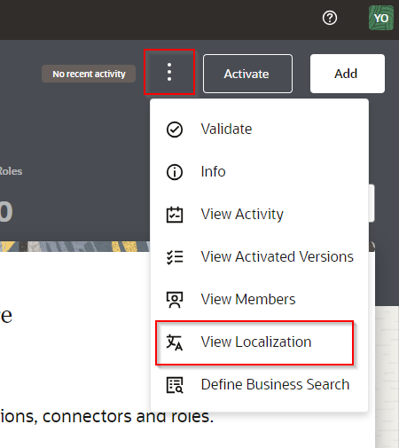
「Add Locale」をクリックします。
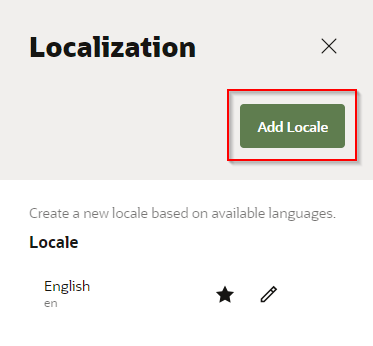
「Select Locale」から「Japanese」を選択し、「Make it Default」にチェックを入れ、「Create」をクリックします。
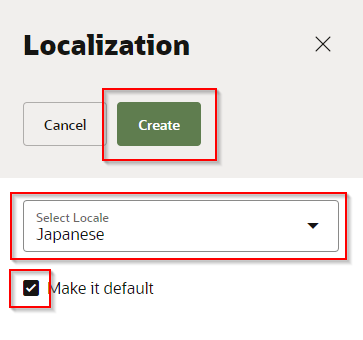
「Japanese」のLocaleがDefaultで追加されます。
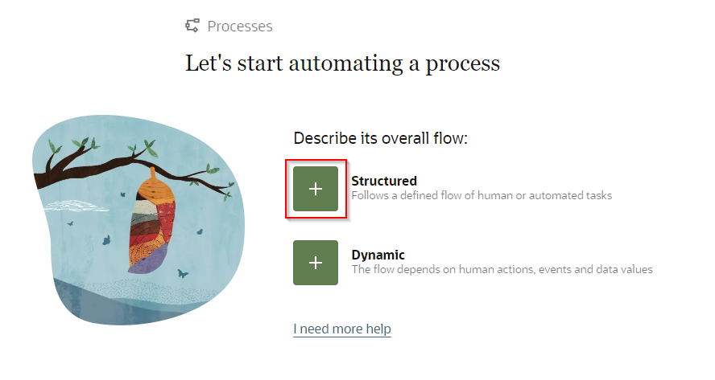
Localizationについて
プロセス・アプリケーションのLocalizationはブラウザの言語設定に依存します。ここでの設定では日本語のLocaleをDefaultで追加しました。プロセス・アプリケーションではLocaleごとにタイトルやボタンの名称などが設定可能ですが、この設定によりアプリケーション内で表示されるDefaultの言語が日本語に設定されます。(例えば英語の文言が設定されていない、且つブラウザの設定が英語の場合、プロセス・アプリケーションでは日本語で設定された文言が表示されます)
ロールを作成する
次に休暇取得申請で使用するユーザーロールを作成します。
右上の「Add」をクリックします。
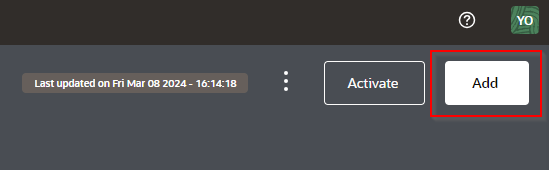
「Roles」にある「New」をクリックします。
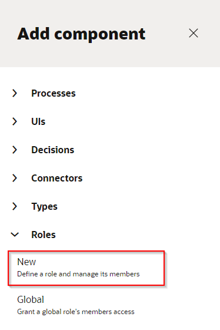
最初に「Employee」のロールを作成します。
以下のように入力し、「Create」をクリックします。
| 入力項目 | 入力する値 |
|---|---|
| Title | Employee |
| Identifier Name | Employee |
| Description | 従業員のロール |
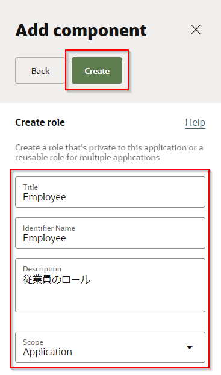
同様の手順で「Manager」ロールを作成します。
| 入力項目 | 入力する値 |
|---|---|
| Title | Manager |
| Identifier Name | Manager |
| Description | 管理者のロール |
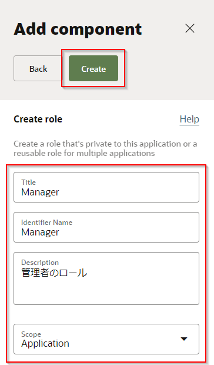
Roleについて
| 項目 | 説明 |
|---|---|
| アプリケーションロール | 特定のプロセス アプリケーションに固有であり、そのプロセス アプリケーションに対してのみ使用可能。他のプロセス アプリケーションと共有することはできない。※ProcessUserはデフォルトで用意されているもの |
| グローバルロール | 特定のプロセス アプリケーションに限らず、他のアプリケーションでも使用可能なロール。 |
次に作成したロールにユーザーを設定します。
作成したEmployeeをクリックして開きます。
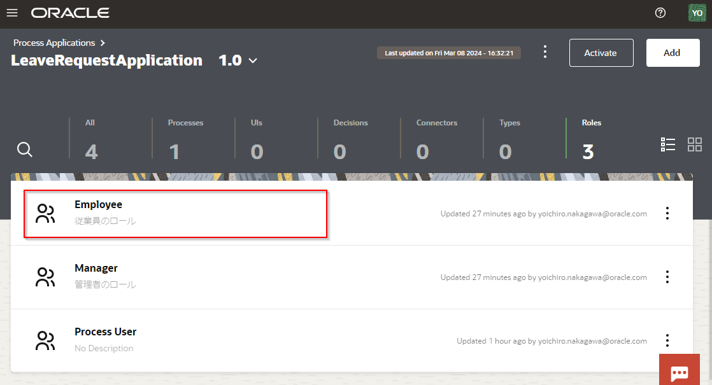
「Permission」は「Use」にチェックし、任意のユーザーをEmployeeに登録します。Permissionの詳細についてはこちらをご確認ください。
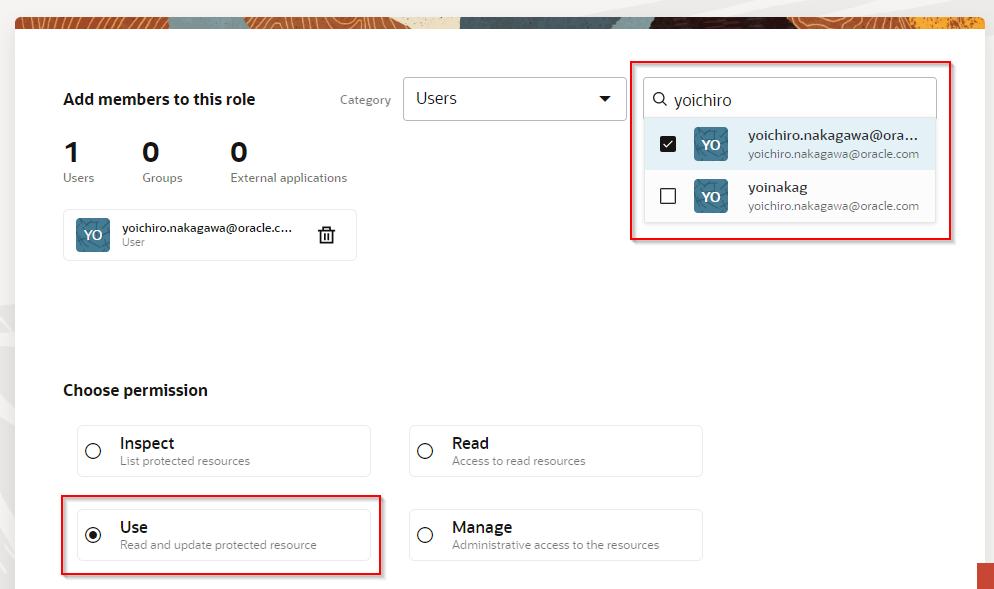
同様の手順で任意のユーザーをManagerに登録します。
今回は確認のため、EmployeeとManagerに同一のユーザーを設定しています。
以上でロール・ユーザーの設定は完了です。
ビジネス・プロセスを作成する
休暇取得申請のビジネス・プロセス（フロー）を作成します。ここでは、以下のシンプルな1段階承認のプロセスを作成します。
Processesをクリックし、プロセス(ワークフロー)の作成画面へ遷移します。
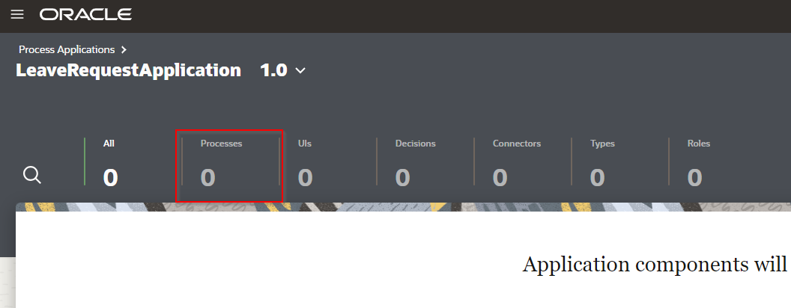
プロセスの画面へ遷移したら「Structured」をクリックし、構造化プロセスを作成します。
以下の項目を入力し、「Create」をクリックします。
| 入力項目 | 入力する値 |
|---|---|
| Title | LeaveRequestProcess |
| Identifer Name | LeaveRequestProcess |
| Description | 休暇取得申請の業務プロセス |
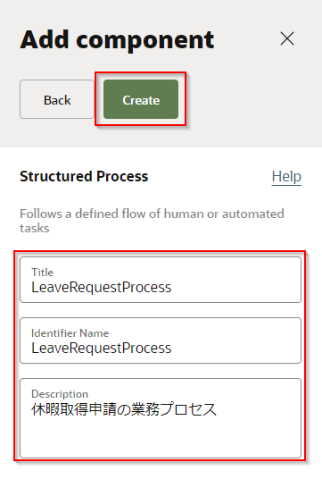
プロセスが新規されるので、クリックして開きます。
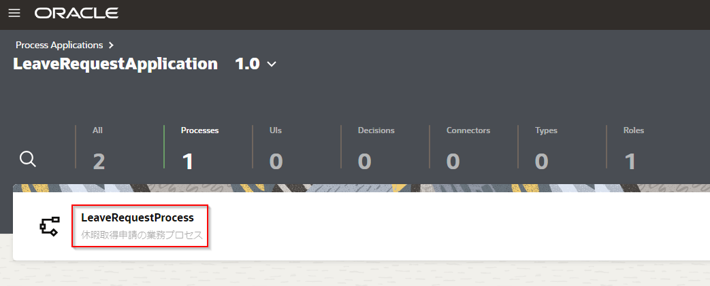
プロセス・エディタが表示されます。
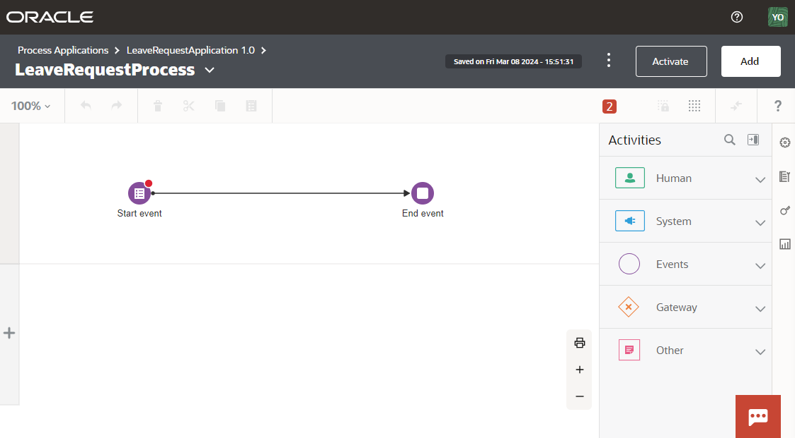
ビジネス・プロセスを設計する
引き続き、プロセスエディタを利用して、プロセスを設計します。
スイムレーンの作成
プロセスに必要な役割を決定し、そのロールをスイムレーンとして定義します。
TIPS
スイムレーンとは、プロセス・エディタのキャンバス間にある水平のラインです。 すべてのフロー要素はスイムレーン内に配置される必要があります。スイムレーン内に配置されたタスクの申請者・承認者は個別に割り当てることができますが、事前にロールを作成し、スイムレーンにロールを割り当てることも可能です。
休暇取得承認プロセスを開き、プロセス・エディタの左端の灰色をクリックします。
クリックすると鉛筆マークが表示されるのでクリックします。
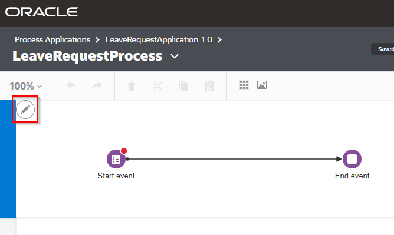
PropertyからEmployeeを選択し、「×」をクリックして閉じます。
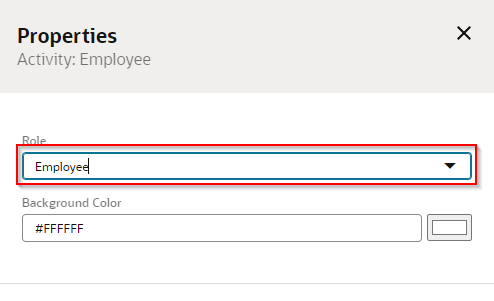
次にEmployeeの下の「＋」になっている枠をクリックします。
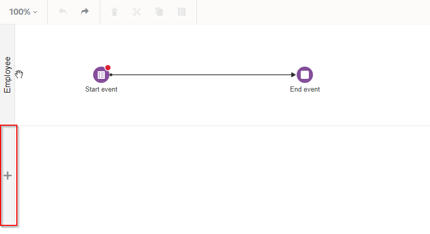
自動的にProcess Userのロールになっているので、クリックして鉛筆マークをクリックします。
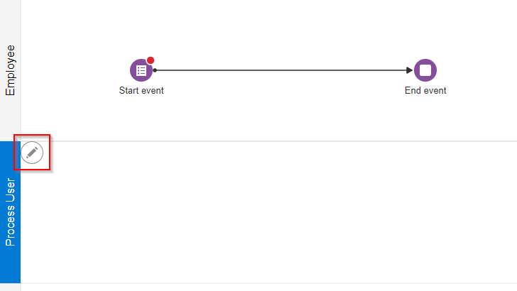
Managerを設定して、「×」をクリックして閉じます。
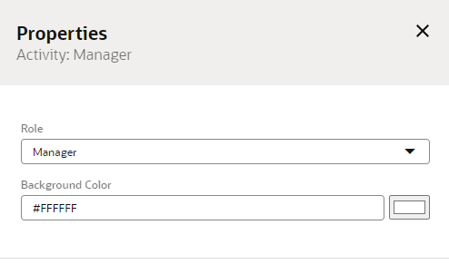
これでスイムレーンの設定が完了しました。
休暇取得申請プロセスの設計
引き続き、プロセス・エディタを利用して、休暇取得申請プロセスを設計します。
Employee スイムレーンの Start イベントのラベルをダブルクリックし、休暇取得申請の新規作成に変更します。
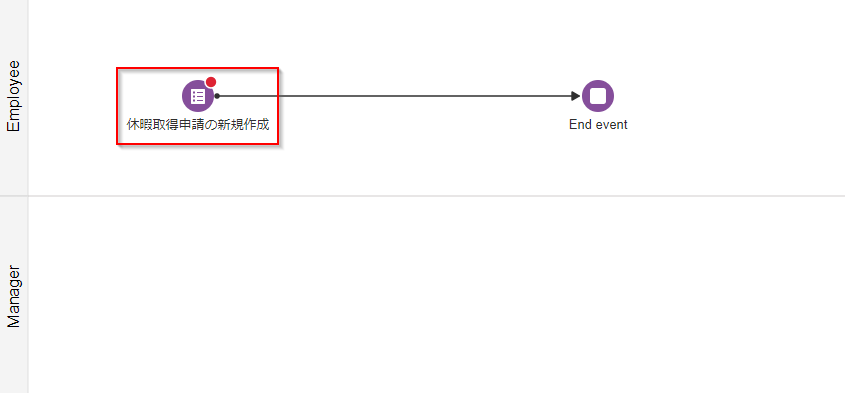
同じ手順で、End イベントのラベルを終了に変更します。
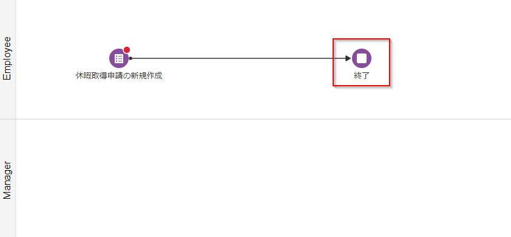
終了イベントを、Employee スイムレーンから Manager スイムレーンにドラッグ&ドロップで移動します。
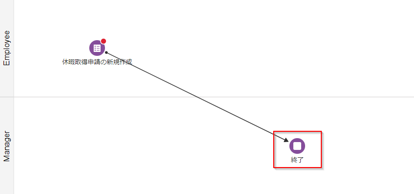
プロセスエディタの右サイドにあるエレメントパレットのHumanを開き、承認タスクを Manager スイムレーンにドラッグ＆ドロップで配置します。
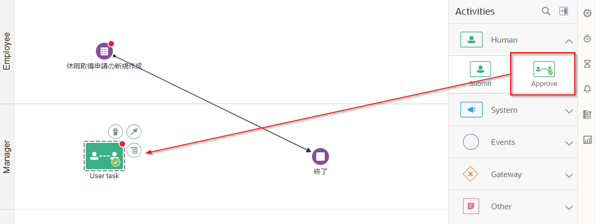
「休暇取得申請の新規作成」イベントと「終了」イベントをつなぐシーケンスをクリックし、削除ボタンをクリックします。
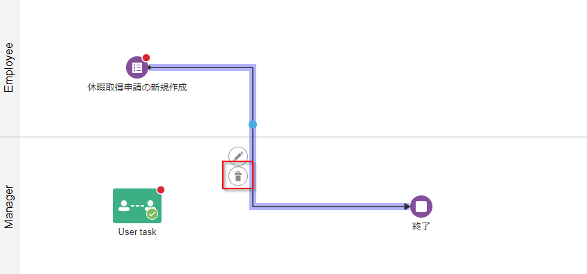
配置した承認タスクのラベル(User task)をダブルクリックし、「休暇取得申請の承認」に変更します。
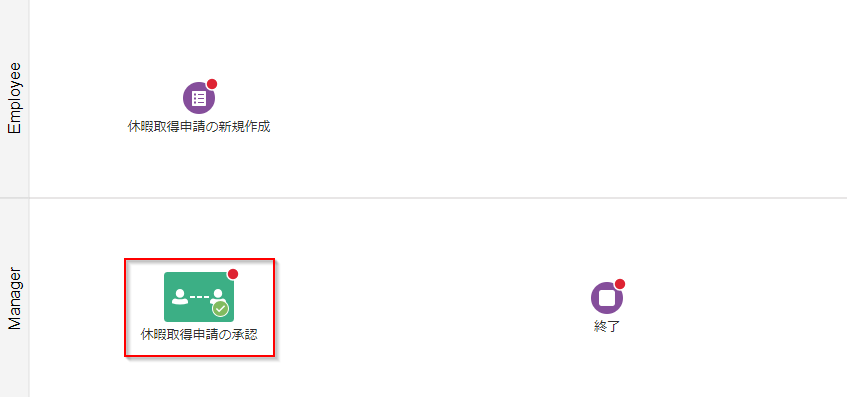
「休暇取得申請の新規作成」イベントを1回クリックし、矢印をドラッグ&ドロップで「休暇取得申請の承認」タスクに接続します。（シーケンス・フローを接続します。）
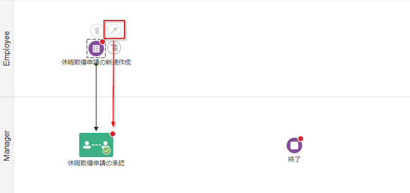
エレメントパレットのゲートウェイを開き、排他ゲートウェイを Manager スイムレーンの「休暇取得申請の承認」タスクと「終了」イベントの間にドラッグ＆ドロップで配置します。
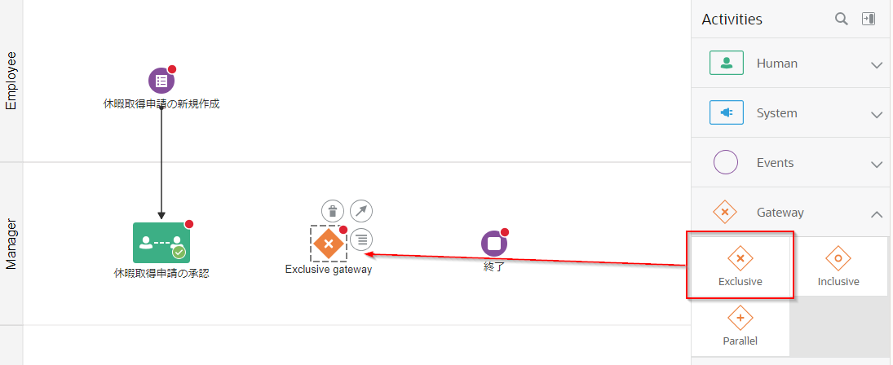
配置した排他ゲートウェイのラベル(Exclusive gateway)をダブルクリックし、「承認？」に変更します。
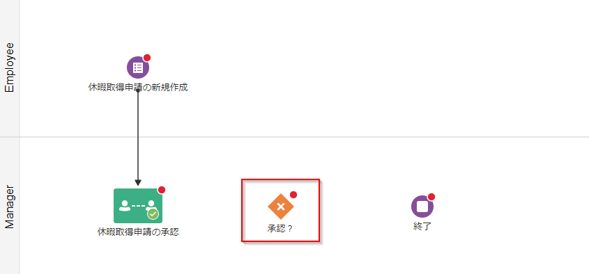
「休暇取得申請の承認」タスクと「承認？」ゲートウェイを、シーケンス・フローで接続します。
「承認？」ゲートウェイと「終了」イベントを、シーケンス・フローで接続します。
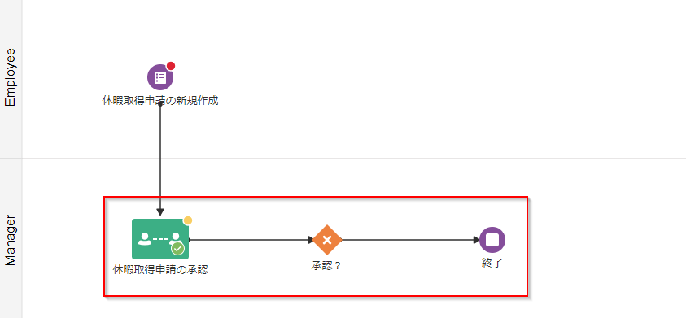
エレメントパレットのヒューマンを開き、送信タスクを Employee スイムレーンにドラッグ＆ドロップで配置します。
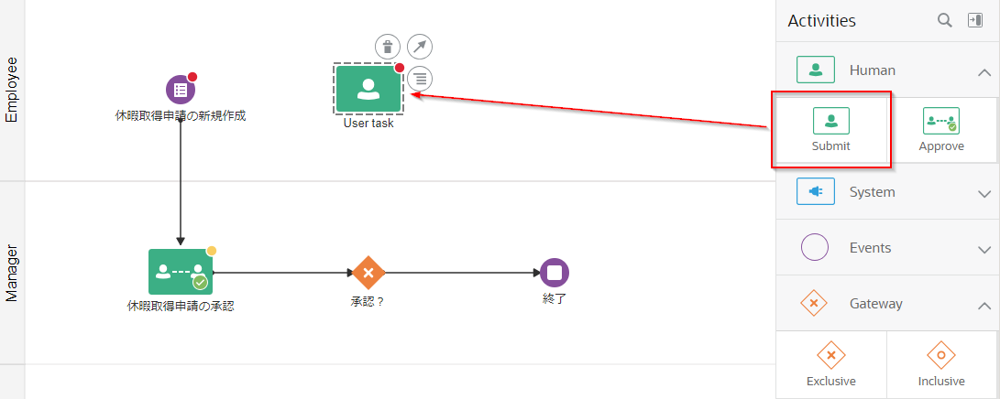
配置した送信タスクのラベル(User task1)をダブルクリックし、「休暇取得申請の再提出」に変更します。
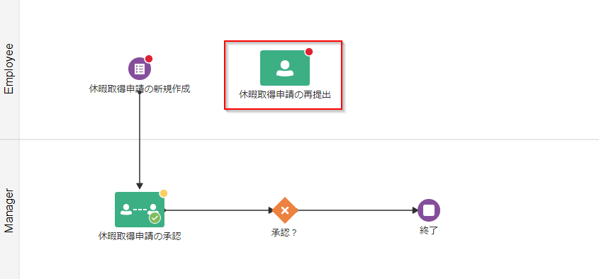
「承認？」ゲートウェイと「休暇取得申請の再提出」タスクを、シーケンス・フローで接続します。
「休暇取得申請の再提出」タスクと「休暇取得申請の承認」タスクを、シーケンス・フローで接続します。
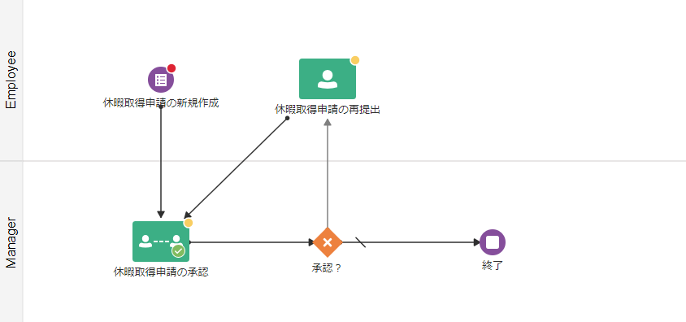
以下のように、配置したタスクやゲートウェイの位置をドラッグ&ドロップ操作で整えます。
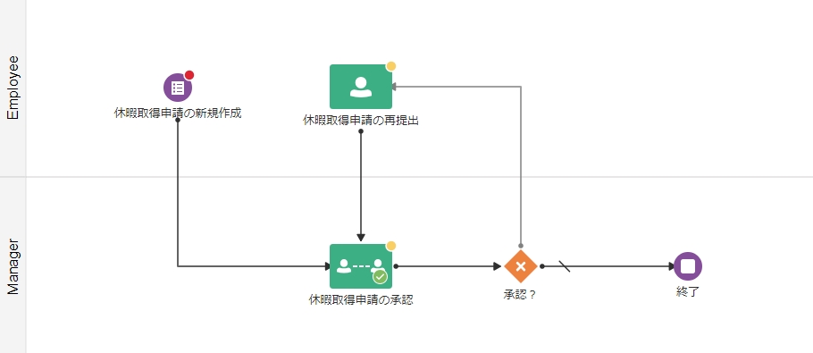
これで休暇取得申請プロセスの設計ができました。
Web フォームを作成する
次に休暇取得申請プロセスで利用するWebフォームを作成します。
タブから「UIs」を選択し、「Web Form」をクリックします。
(または右上の「Add」→「UIs」にある「Web Form」をクリックします。)
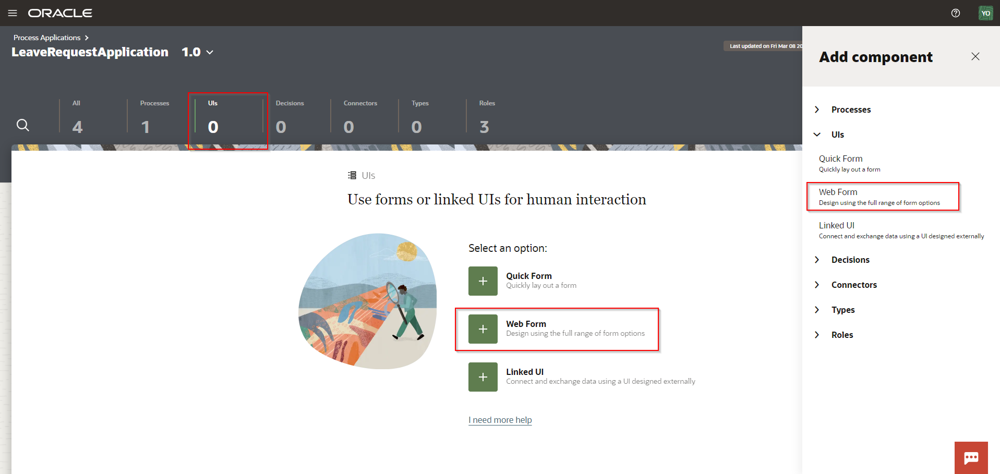
以下の内容を入力し、「Create」をクリックします。
| 入力項目 | 入力する値 |
|---|---|
| Title | LeaveRequestForm |
| Identifer Name | LeaveRequestForm |
| Description | 休暇取得申請プロセスで利用する共通フォーム |
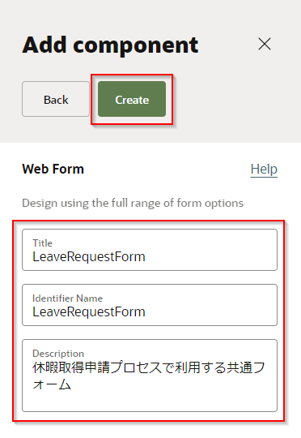
Webフォームが作成されるので、クリックして開きます。
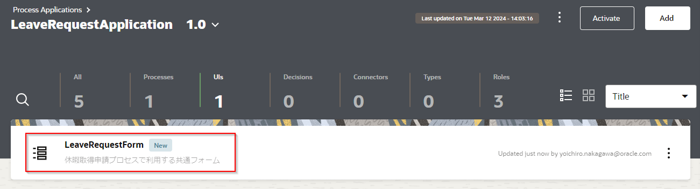
Web フォームエディタが開きます。基本パレットの入力テキストを、キャンバスにドラッグ&ドロップで配置します。
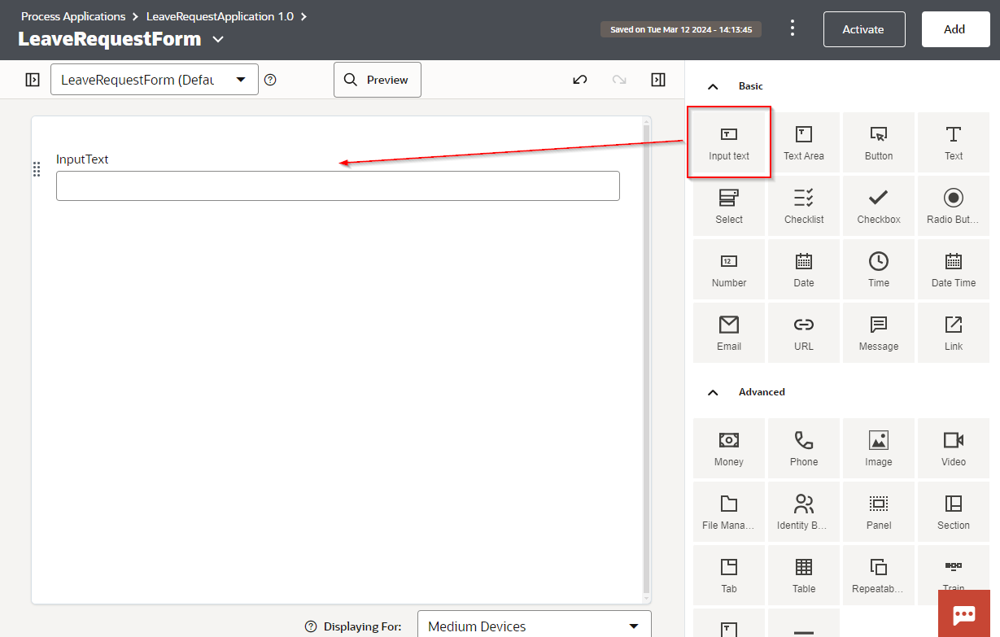
配置した入力テキストをダブルクリックすると画面の左側にPropertiesが表示されるので、以下の内容を入力します。
| 入力項目 | 入力する値 |
|---|---|
| 名前 | name |
| ラベル | 名前 |
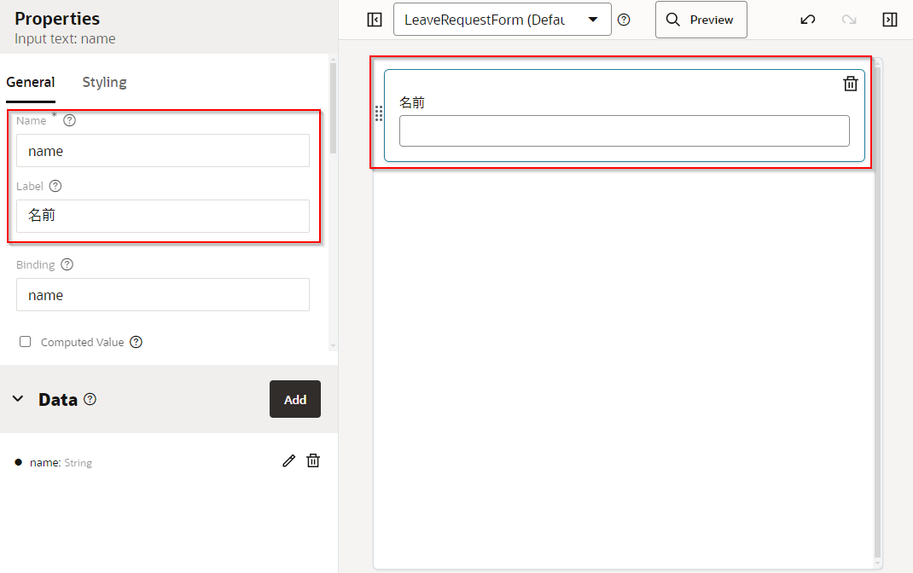
「名前」の右隣に入力テキストを配置します。 配置した入力テキストを選択し、名前とラベルは以下の通りに入力します。
| 入力項目 | 入力する値 |
|---|---|
| 名前 | id |
| ラベル | 社員番号 |
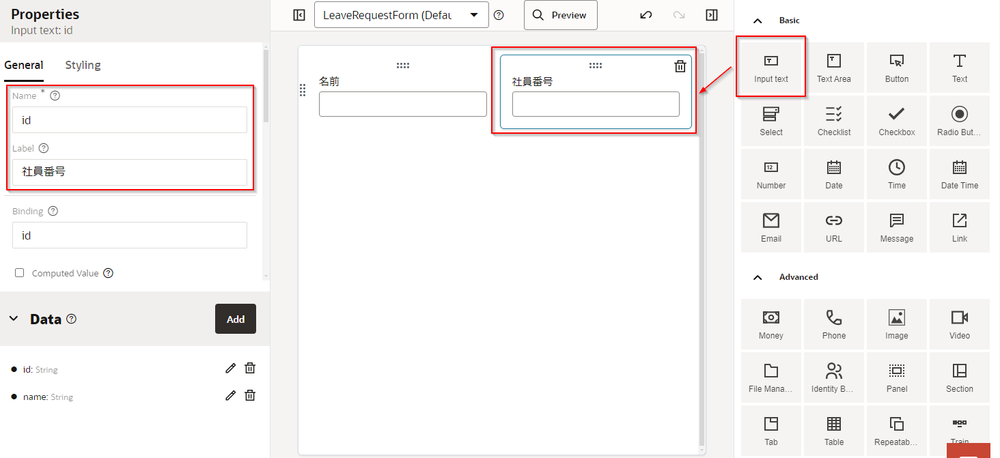
「名前」「社員番号」の下に、基本パレットのラジオ・ボタンを配置します。
配置したラジオ・ボタンを選択し、名前とラベルは以下の通りに入力します。
| 入力項目 | 入力する値 |
|---|---|
| 名前 | leaveType |
| ラベル | 休暇区分 |
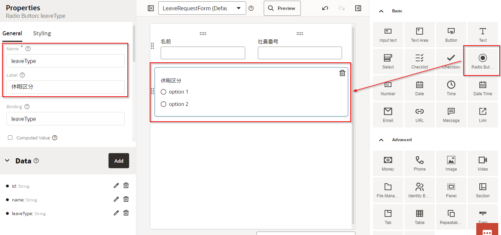
休暇区分（ラジオ・ボタン）を選択したまま、プロパティの一般タブを下にスクロールします。
オプション・ソースで静的(Static)を選択し、オプション名とオプション値にそれぞれ以下を入力します。
| 入力項目 | 入力する値 |
|---|---|
| オプション名 | 有給休暇 傷病休暇 慶弔休暇 |
| オプション値 | 有給休暇 傷病休暇 慶弔休暇 |
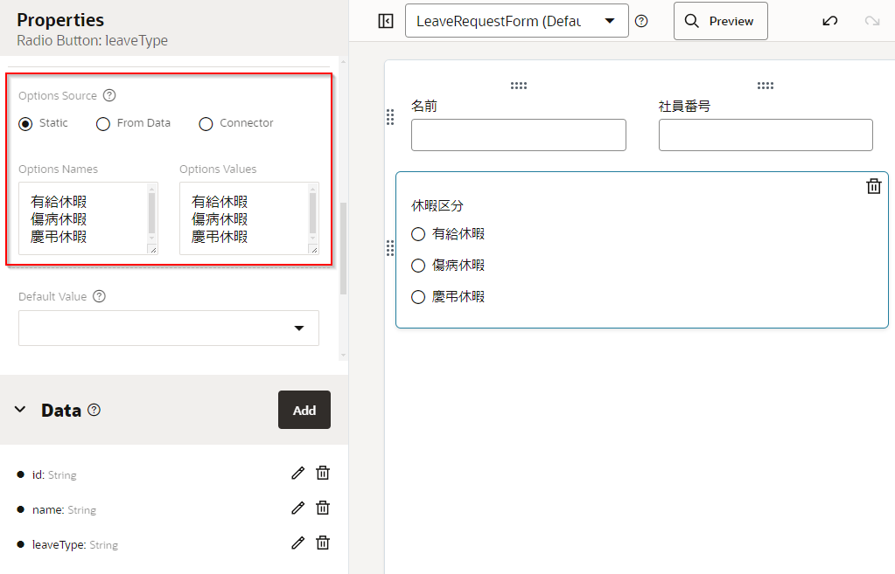
休暇区分（ラジオ・ボタン）の下に、基本パレットの日付を2つ並べて配置します。
1つ目の日付の名前とラベルは以下の通りに入力します。
| 入力項目 | 入力する値 |
|---|---|
| 名前 | leaveStartDate |
| ラベル | 休暇開始日 |
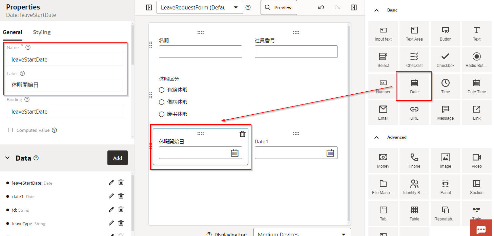
2つ目の日付の名前とラベルは以下の通りに入力します。
| 入力項目 | 入力する値 |
|---|---|
| 名前 | leaveEndDate |
| ラベル | 休暇終了日 |
休暇開始日と休暇終了日の下に、基本パレットのテキスト領域を配置します。
配置したテキスト領域を選択し、名前とラベルを以下の通りに入力します。
| 入力項目 | 入力する値 |
|---|---|
| 名前 | reason |
| ラベル | 理由 |
作成したWebフォームを確認します。プレビューをクリックします。
Webフォームのプレビューが表示されます。フォームに任意の内容を入力し、送信をクリックすると、結果が画面下部に表示されます。
小デバイス、大デバイスなどを選択し、デバイスの大きさにあわせたプレビューができます。
プレビューを終了する場合は、右上の x をクリックします。
これでWebフォームの作成ができました。
プレゼンテーションを作成する
プレゼンテーションはフォームの 1 つのビューです。前の手順で作成したWebフォームをベースとしてプレゼンテーションを作成します。今回は承認時にはWebフォームを編集できないようにするため、ベースのWebフォームを基に内容の編集ができないプレゼンテーションを作成します。
何も選択していない状態でPropertiesの「Presentations」－「Add」をクリックします。
Customizeを選択します。Customizeで作成されたPresentationは配置した項目の表示・非表示のみを変更することができます。 他のPresentationのTypeに関してはこちらをご確認ください。
以下の内容を入力し、Presentationを作成します。
| 入力項目 | 入力する値 |
|---|---|
| Name | approve |
| Description | 承認用のWebフォーム |
approveのPresentationが作成されました。
入力テキストなどを選択し、Propertiesを見てみると編集できないことが確認できます。
Presentationは上のプルダウンから切り替えることができます。
上部にあるCutomizeをクリックします。
すべての項目を「read only」に変更します。
Previewで項目が編集できないことを確認します。
以上でWebフォームの作成ができました。
タスク・プロパティを編集する
開始イベントと各種タスクを編集します。
作成したプロセスの各タスク(申請、承認、再申請)に先ほど作成したWebフォームを割り当てます。
休暇取得申請の新規作成イベントの編集
Processesから「LeaveRequestProcess」をクリックして開きます。
「休暇取得申請の新規作成」イベントをクリックし、「プロパティを開く」(Open Properties)をクリックします。
画面右部に設定ペインが開きます。
下にスクロールし、タイトルに「休暇取得申請の新規作成」と入力します。
次にUIで前の手順で作成した「LeaveRequestForm」を選択し、OKをクリックします。
Presentationは「Default Presentation」のままにしておきます。Default Presentationは最初にベースとして作成した編集可能なWebフォームです。
休暇取得申請の承認タスクの編集
「休暇取得申請の承認」タスクをクリックし、プロパティを開くをクリックします。
プロパティの設定が以下の項目になっていることを確認します。
| 項目 | 値 |
|---|---|
| Policy | いずれか1人の割当て先(Any Single Assignee) |
| Select Perticipants | 現在のスイムレーン・ロールの任意のメンバー(Current Lane Participants) |
下にスクロールし、以下の内容を設定します。 「approve (Customized from LeaveRequestForm)」は項目を編集不可に設定したPresentationです。
| 項目 | 値 |
|---|---|
| Title | 休暇取得申請の承認 |
| UI | LeaveRequestForm |
| Presentation | approve (Customized from LeaveRequestForm) |
休暇取得申請の再提出タスクの編集
これまでと同じ手順で、タイトルとフォームを設定します。
設定ペイン右上の下向き矢印をクリックし、設定ペインを閉じます。
| 入力項目 | 入力する値 |
|---|---|
| Title | 休暇取得申請の再提出を入力 |
| UI | LeaveRequestForm |
| Presentation | Default Presentation |
ゲートウェイを編集する
ゲートウェイを定義することで、フローを分岐・統合させることができます。
この場合、「休暇承認申請の承認」タスクの結果を以下の通りに分岐させます。
- 承認(APPROVE) → 終了イベント
- 却下(REJECT) → 休暇取得申請の再提出タスク
データ・アソシエーションの編集
「休暇承認申請の承認」タスクをクリックし、「データ・アソシエーションを開く」をクリックします。
「Input」タブを選択し、データの受け渡し設定を以下のようにドラッグアンドドロップで設定します。
こうすることで申請時のWebフォームで入力されたデータが承認時のWebフォームに反映されます。
次に「Output」タブを選択し、データの受け渡し設定を以下のようにドラッグアンドドロップで設定します。
こうすることで承認時の承認、拒否の実行結果がtaskOutcomeDataObjectに格納されます。
右上の「Apply」をクリックして変更を反映させます。
同様に「休暇取得申請の再提出」のデータ受け渡しを設定します。
「休暇取得申請の再提出」タスクをクリックし、「データ・アソシエーションを開く」をクリックします。
「Input」タブを選択し、データの受け渡し設定を以下のようにドラッグアンドドロップで設定します。
「Output」タブを選択し、データの受け渡し設定を以下のようにドラッグアンドドロップで設定します。、「Apply」をクリックします。
「承認？」ゲートウェイの編集
「承認？」ゲートウェイ→「休暇取得申請の再提出」タスクを接続するシーケンス・フローをクリックし、編集アイコンをクリックします。 PropertiesのConditionに以下の式を入力します。
taskOutcomeDataObject != "APPROVE"
TIPS
taskOutcomeDataObjectには画面フォームで実行した申請や承認の結果が格納されています。
プロセス・アプリケーションのアクティベート
最後に作成したプロセス・アプリケーションを実行できるようにします。
画面右上の「Activate」をクリックします。
そのまま「Activate」をクリックします。
以下のように表示され、アクティベートが完了します。
以上でこのチュートリアルは終了です。